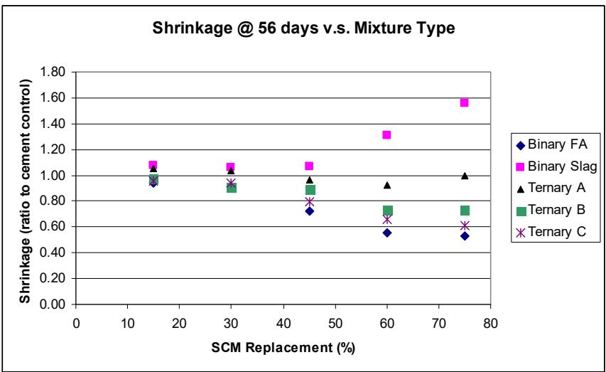
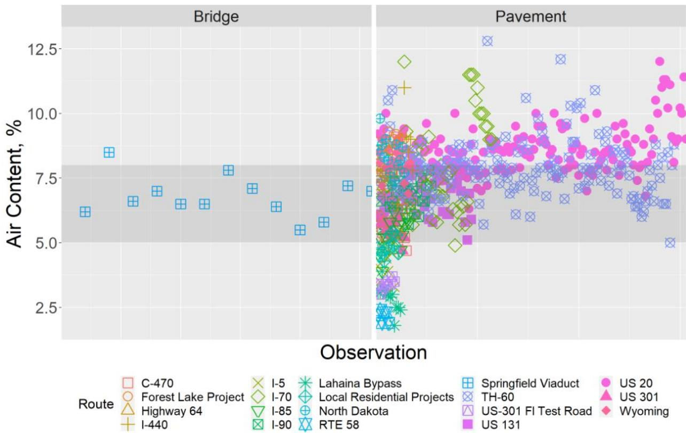
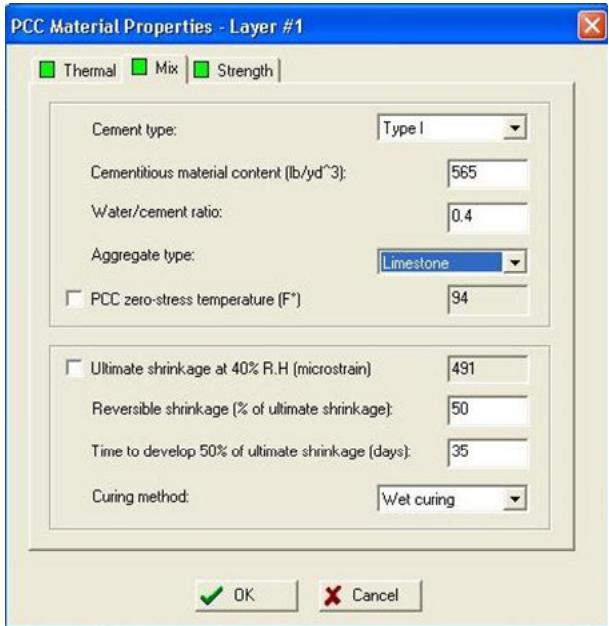
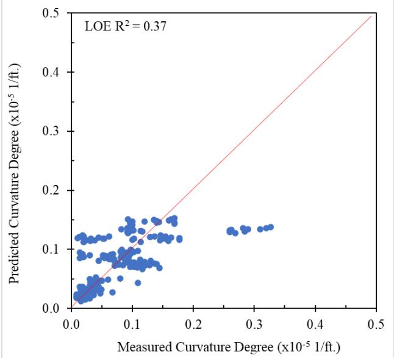
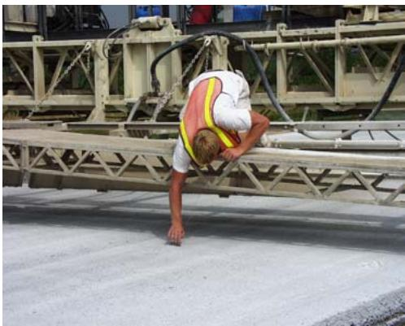

Quality Management-Concrete
Quality Management-Concrete is a quality management method grouped under Mix Design & Specialty Mixtures [3]. It establishes specific acceptance criteria for fresh concrete properties, such as slump and air content, which are validated against the parameters defined in the Mix Design & Specialty Mixtures specifications [5]. For instance, design targets like a 1.5-inch slump and 6 percent air content must meet performance-based flowability and durability requirements outlined in mix design procedures [5]. This concrete mix design and quality control approach is used in Iowa pavement construction; on the Iowa Highway 13 project, QMC mixes were designed and supplied by Fred Carlson Company for the thin unbonded PCC overlay, mixed at a portable central plant. [1] Modified Quality Management Concrete (M-QMC) is a specialized variant of the Iowa-specific QMC approach designed to mitigate premature joint deterioration.
Sources (9)
Sub-concepts (1)
Raw Material Uniformity and Composition
Ternary mixtures incorporating supplementary cementitious materials show significant promise for improving concrete performance by compensating for shrinkage effects caused by individual components like cement and slag [2]. While the uniformity of raw cementitious materials is monitored via bulk chemical composition, specific mineral phases often exhibit less uniformity than the bulk chemistry, suggesting manufacturing process improvements [2].

Illustration of how ternary mixtures impact the shrinkage of mortar bars [2]Mix Design and Proportioning Strategies
A QMC mix design utilizing a water-to-cement ratio of 0.40 specifies a target slump of 1.5 inches and an air content of 6 percent [3]. In contrast, pre-QMC mixes are characterized by higher allowable water-to-cementitious material (w/cm) ratios and lower fly ash replacement rates, typically around 15 percent compared to the 20 percent rate common in most QMC mixes [4]. Specific variations include the C-SUD urban durability mix design, which utilizes a basic w/cm ratio of 0.40 with fly ash replacement rates up to 35 percent, whereas the C-3WR mix used for county pavements employs a 20 percent fly ash rate and a 0.43 w/cm ratio [4]. Regarding SFSCC, mix proportioning balances flowability, consolidating ability, and shape-holding capacity through plasticizers for flow/green strength and nano-clay fines for stability [5]; furthermore, optimizing coarse aggregate usage in SFSCC can reduce Portland cement content by up to 11.5%, while combining slag with coarse aggregates achieves a 24% reduction [5].
 Flowability and green strength for SFC, SCC, and SCCF mixtures [5]
Flowability and green strength for SFC, SCC, and SCCF mixtures [5]
Optimized aggregate gradations reduce paste volume while maintaining workability, which lowers Portland cement content to decrease CO2 emissions and shrinkage potential without compromising performance, an approach that facilitates smoother pavements that reduce vehicle fuel consumption over the pavement’s life [6]. To achieve this, the Shilstone chart guides the selection of combined aggregate gradation, typically targeting Zone II for coarseness and workability to ensure proper mixture stability [6]. This method replaces fixed recipe-based specifications by allowing contractors to optimize aggregate combinations within defined performance limits [6].
Fresh Concrete Properties and Workability Testing
To evaluate the workability, rheology, and mixing efficiency of various laboratory and field concrete mixtures, a vibrating slope apparatus (VSA) is utilized [2]. This is particularly relevant for semi-flowable self-consolidating concrete (SFSCC), which reduces deterioration associated with overconsolidation by relying on self-consolidation and immediate shape retention after extrusion from a slip-form paver, thereby eliminating vibrator trails [5]. The fresh properties of SFSCC are evaluated through rheometer tests and a modified flow table test, which yields an initial flow of 10% at zero drops and a final flow of 138% at 16–18 drops to ensure an adequate balance between flowability and shape stability [5]. For field stability, the VKelly test serves as an indicator where high indices ranging from 0.69 to 1.1 in./√s correlate with problematic workability, such as collapsing curbs; this necessitates water content adjustments that lower the actual batched w/cm ratio to between 0.34 and 0.36 [7].
 Mortar flow curve from the loading down curve of SFSCC and a conventional pavement mixture [5]
Mortar flow curve from the loading down curve of SFSCC and a conventional pavement mixture [5]
Furthermore, the Sequential Air-Measurement (SAM) method evaluates the air-void system in fresh concrete by applying sequential pressurizations at 0.21 MPa and 0.31 MPa to calculate a SAM number, which infers void quality rather than just total volume [6]. While a limit of 0.30 is typically applied, a design target of SAM ≤ 0.20 provides a safety factor against failure during construction [6]. Regarding air entrainment consistency, the average air content for Iowa DOT QMC projects is 6.3% with a low standard deviation of 0.3%, indicating high consistency compared to all Iowa pavement data which shows a standard deviation of 1.4%; this tight control contributes to the durability and performance of the concrete mixtures [8].

Air content scatter data for bridges (left) and pavements (right) [6]Hardened Air Content Testing
To ensure realistic estimates of in-situ air content, hardened air content tests on core samples extracted from pavement slabs are preferred over cast cylinders, as cores reflect consolidation by vibrators on slipform pavers [2]. To positively influence physical characteristics such as workability and hardened air content distribution, mixing times of 60 seconds or greater are recommended, with shorter times applicable only under specific circumstances [2]. Statistical analysis of over 19,000 core cylinder strength samples indicates that after the year 2000, the mean 28-day compressive strength for Iowa QMC projects decreased to approximately 4,397 psi with a standard deviation of 638 psi, a reduction attributed to changes in mix design associated with the implementation of Quality Management Concrete [8]. While the typical 28-day modulus of rupture (MOR) for Iowa concrete is approximately 646 psi with a standard deviation of 51 psi—aligning closely with the MEPDG default value of 650 psi and allowing for the use of standard predictive equations for flexural strength in pavement design [8]—the mean elastic modulus for Iowa concrete is approximately 4.82 x 10^6 psi with a standard deviation of 0.28 x 10^6 psi, which differs significantly from the MEPDG default of 3,942,355 psi and highlights the need for region-specific material inputs in mechanistic-empirical design models [8].

MEPDG PCC material property inputs and their default values [8]Regarding pavement performance, QMC mix designs result in reduced curling and warping behavior compared to pre-QMC mixes, with curvature IRI values ranging from 46.9 to 107.1 in./mile for QMC versus 43.1 to 215.7 in./mile for pre-QMC [4]. Specifically, QMC mixes lower all curling and warping indicators more than other mix types, whereas pre-QMC and C-SUD designs exhibit the greatest tendencies toward these behaviors [4]; furthermore, high-strength concrete mixes with a 900 psi modulus of rupture (0.42 w/cm ratio and 15 percent fly ash) exhibit higher curling and warping behavior than low-strength mixes with a 550 psi modulus of rupture (0.53 w/cm ratio and 15 percent fly ash) [4]. In paste expansion testing using a feeler gauge around aggregate, high fly ash content significantly slows expansion rates, with chemical analysis identifying the expansive phase as magnesium hydroxide (Mg(OH)₂) formed during immersion in magnesium chloride solutions [7].

Multiple linear regression models’ prediction results for non-LTPP sections: (a) curvature IRI, (b) deflection, (c) deflection ratio, (d) degree of curvature [4]Shrinkage and Nano-Clay Additives
While SFSCC exhibits higher autogenous and drying shrinkage than conventional concrete, the addition of specific nano-clay materials like Metamax can decrease both shrinkage types [5].
 shows the shrinkage development of concrete mixes without any nano-clay. The results show that the mortars exhibit swelling during the very early age. SCC and SCCF have about 37% higher autogenous shrinkage compared to SFC. The autogenous shrinkage of SCC and SCCF are similar. Figure 5–13. Autogenous shrinkage of SCC, SFC, and SCCF [5]
shows the shrinkage development of concrete mixes without any nano-clay. The results show that the mortars exhibit swelling during the very early age. SCC and SCCF have about 37% higher autogenous shrinkage compared to SFC. The autogenous shrinkage of SCC and SCCF are similar. Figure 5–13. Autogenous shrinkage of SCC, SFC, and SCCF [5]
Field Quality Control and Monitoring Methods
The Iowa Maturity Device is utilized for quality control, though its effectiveness is constrained by the availability of personnel to read the devices, the type of digital thermometer used, and the quality of thermocouple wires [1]. To manage thermal conditions during paving in high daytime temperatures, water was sprayed on the asphalt concrete (ACC) base to cool it; infrared temperature guns monitored the subbase, and spraying occurred when the surface reached 100°F [9]. Additionally, field compressive strength cylinders containing blended cement are cured in lime water until 28 days to achieve higher strengths and minimize early curing differences observed in field-cast specimens [2].

Iowa Maturity Device Installation [1]The provided source passages do not contain information regarding Quality Management-Concrete establishing baseline statistical process control limits or Modified Quality Management Concrete adjusting these criteria based on site-specific mix design variables. The texts focus on specific test results for M-QMC mixes, such as air content measurements and comparisons with conventional QMC [7], the utility of certain tests in laboratory settings versus quality control [7], and detailed air void structure analysis using rapid air tests and Super Air Meter data [7]. Consequently, the claim cannot be supported by the provided evidence.
Based on data from 330 samples across 15 QMC projects, the typical mean unit weight for Iowa pavement concrete is approximately 142.7 pcf with a standard deviation of 2.1 pcf [8]. This parameter follows a normal distribution and serves as a critical input for mechanistic-empirical pavement design [8].
Related
- Unbonded Concrete Overlay
- Mix Design & Specialty Mixtures
- Modified Quality Management Concrete (M-QMC)
Joints on either side of the pavement were tied with #4 epoxy-coated steel bars spaced at 30-inch intervals to connect the widening unit to the thin unbonded pavement. [9]
References
- J. K. Cable, M. L. Anthony, F. S. Fanous, and B. M. Phares, "Evaluation of Composite Pavement Unbonded Overlays: Phases I and II," Center for Portland Cement Concrete Pavement Technology, Iowa State University, Ames, IA, Rep. TR-478, 2003. [Online]. Available: https://www.intrans.iastate.edu/research/completed/evaluation-of-composite-pavement-unbonded-overlays-phase-iii-tr-478-hr-1093-proj-2/
- S. Schlorholtz, K. Wang, J. Hu, and S. Zhang, "Materials and Mix Optimization Procedures for PCC Pavements," CTRE, Iowa State University, Ames, IA, Rep. TR-484, 2006. [Online]. Available: https://www.intrans.iastate.edu/wp-content/uploads/2018/03/mco-final.pdf
- K. Wang, J. Hu, F. Bektas, P. Taylor, and H. Ceylan, "Crack Development in Ternary Mix Concrete Utilizing Various Saw Depths," National Concrete Pavement Technology Center, Ames, IA, Rep. TR-587, 2009. [Online]. Available: https://publications.iowa.gov/19999/1/IADOT_tr_587_Crack_Development_Ternary_Mix_Concrete_Saw_Depths_February_2009.pdf
- K. Tian, D. King, B. Yang, S. Kim, A. Alhasan, and H. Ceylan, "Impact of Curling and Warping on Concrete Pavement: Phase II," Program for Sustainable Pavement Engineering and Research (PROSPER), Iowa State University, Ames, IA, Rep. TR-749, 2023. [Online]. Available: https://intrans.iastate.edu/app/uploads/2023/06/Impact_of_Curling_and_Warping_Phase_II_w_cvr.pdf
- K. Wang, S. P. Shah, J. Grove, P. Taylor, P. Wiegand, B. Steffes, G. Lomboy, Z. Quanji, L. Gang, and N. Tregger, "Self-Consolidating Concrete—Applications for Slip-Form Paving: Phase II," National Concrete Pavement Technology Center, Ames, IA, Rep. TPF-5(098), 2011. [Online]. Available: https://www.intrans.iastate.edu/wp-content/uploads/2018/03/SCC_Phase_2_final_report-edited_wcover.pdf
- J. Gross, J. Weiss, T. Ley, P. Taylor, N. Weitzel, T. Van Dam, G. Smith, and C. Jones, "Performance-Engineered Concrete Paving Mixtures," National Concrete Pavement Technology Center, Iowa State University, Ames, IA, Rep. TPF-5(368), 2022. [Online]. Available: https://www.intrans.iastate.edu/wp-content/uploads/2023/04/performance-engineered_concrete_paving_mixtures_w_cvr.pdf
- X. Wang, P. Taylor, and D. King, "Evaluation of Modified Concrete Mixture Proportions for the City of West Des Moines," National Concrete Pavement Technology Center, Ames, IA, 2016. [Online]. Available: https://www.intrans.iastate.edu/wp-content/uploads/2018/03/WDM_modified_concrete_mixture_proportions_w_cvr.pdf
- K. Wang, J. Hu, and Z. Ge, "Task 4: Testing Iowa PCC Mixtures for the AASHTO Mechanistic-Empirical Pavement Design Procedure," Center for Transportation Research and Education, Ames, IA, Rep. CTRE 06-270, 2008. [Online]. Available: https://www.intrans.iastate.edu/research/completed/testing-iowa-portland-cement-concrete-mixtures-for-the-mechanistic-empirical-pavement-design-guide/
- J. K. Cable, J. L. Morud, and T. R. Tabbert, "Evaluation of Composite Pavement Unbonded Overlays: Phase III," CTRE, Iowa State University, Ames, IA, Rep. TR-478, 2006. [Online]. Available: https://rosap.ntl.bts.gov/view/dot/24065
Feedback on this page